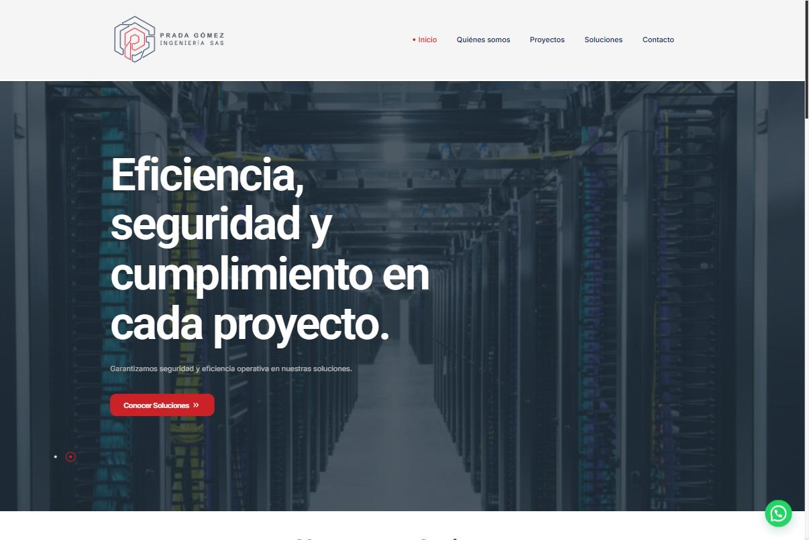
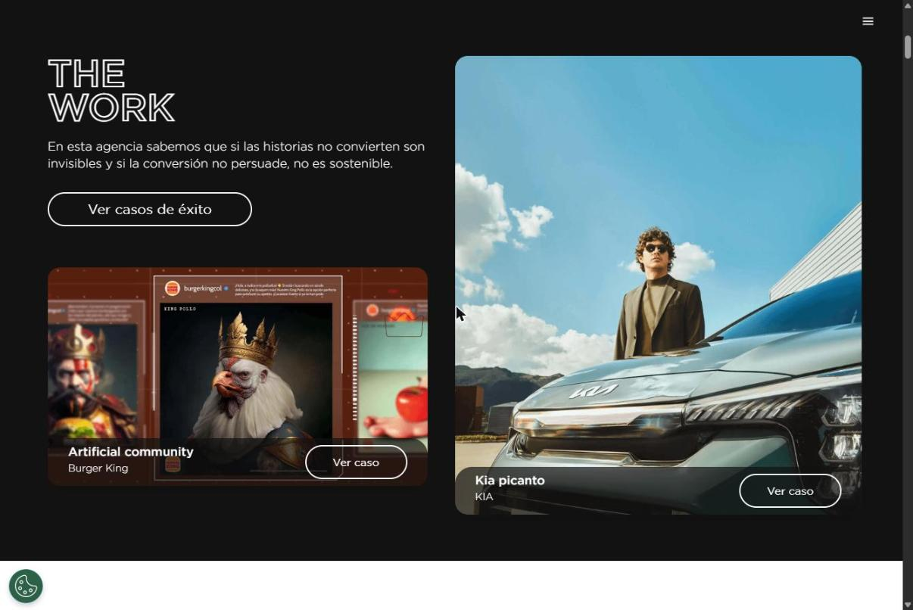
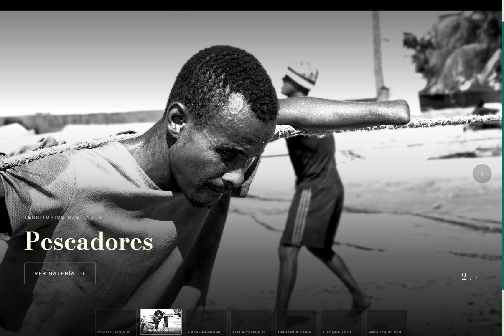

Desarrollo web
Sitios corporativos, portafolios y landings en WordPress + Elementor, Webflow o estáticos con Astro. Rápidos, mantenibles y fáciles de editar por el cliente.
Disponible para proyectos freelance · Bogotá → LATAM
Soy Sebastián Rovira, desarrollador web y especialista en SEO y GEO. Gestiono los sitios oficiales de ASUS en siete países de Latinoamérica y, en paralelo, desarrollo sitios para marcas, agencias y proyectos independientes.
01 — Servicios
Sitios corporativos, portafolios y landings en WordPress + Elementor, Webflow o estáticos con Astro. Rápidos, mantenibles y fáciles de editar por el cliente.
Arquitectura de información, rendimiento, datos estructurados y auditorías con Screaming Frog, GA4 y Search Console.
GEO: contenido y marcado para que ChatGPT, Gemini, Perplexity y los AI Overviews te entiendan y te citen. FAQs, JSON-LD, llms.txt.
Email marketing, landings de campaña, localización de contenido por país y automatización de reportes con Apps Script.
02 — Proyectos
Webmaster territorial de los sitios oficiales de ASUS en la región: Colombia, Chile y Perú de punta a punta, y soporte a Argentina, Ecuador, Uruguay y Paraguay. Operación del sitio y la tienda, landings de campaña, email marketing y estrategia SEO/GEO para cada mercado.

Sitio para una firma colombiana de ingeniería eléctrica y soluciones IT. Definí el sistema de marca (color y tipografía), reconstruí el home sección por sección a partir del mockup y gestioné la migración de hosting y DNS.

Desarrollo en Webflow para la agencia de la red BBDO en Colombia: secciones de casos de éxito, equipo y red global, y la página de talento con más de 150 integrantes. Maquetación editorial, interacciones y responsive.

Portafolio de fotografía documental. Rediseñé la navegación para llegar a cada galería en un clic: hero a pantalla completa con miniaturas, nueve galerías con visor propio y lightbox, migración de hosting y ajustes de compatibilidad PHP.
03 — IA
Sistemas propios donde la IA hace el trabajo repetitivo y yo diseño el flujo, las reglas y el control de calidad.
IA · GEO
Genera preguntas frecuentes, metadatos y datos estructurados listos para publicar a partir de una ficha de producto, adaptados al lenguaje de cada país.
IA · Datos
Consolida analítica web y SEO de varios mercados y la IA redacta el resumen ejecutivo: lo que subió, lo que bajó y dónde enfocarse el próximo mes.
IA · Desarrollo
Flujo de trabajo con agentes de IA para prototipar, escribir código y automatizar tareas: de la idea a un sitio publicado en horas, con revisión humana en cada paso.
04 — Proceso
Qué tienes, qué busca tu cliente y cómo te encuentran hoy.
Mapa del sitio, contenido y datos estructurados antes de desarrollar.
Diseño y desarrollo por secciones, con revisiones cortas.
Search Console, GA4 y seguimiento de visibilidad en IA.
05 — Stack
06 — Preguntas
Es la práctica de preparar el contenido y el marcado de un sitio para que los motores de IA —ChatGPT, Gemini, Perplexity o los AI Overviews de Google— lo entiendan, lo citen y lo recomienden en sus respuestas.
Sitios corporativos, portafolios y landings en WordPress/Elementor, Webflow o sitios estáticos en Astro, además de auditorías SEO/GEO y ajustes técnicos a sitios existentes.
Desde Bogotá, Colombia, con clientes en Colombia y el resto de Latinoamérica de forma remota.
07 — Contacto